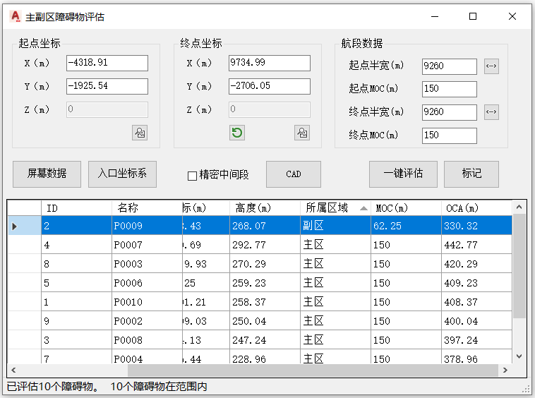

功能简介
【主副区评估】针对某一直线航段构建主区（Primary Area）与副区（Secondary Area）并评估其内障碍物对应的OCA（超障高度）。以航段起点 / 终点坐标与保护区半宽定义评估区，可选精密进近中间航段。
界面预览

界面元素
| 分区 / 控件 | 说明 |
|---|---|
| 起点坐标 / 终点坐标 | 定义kk'线的两端坐标。 |
| 航段数据 | 保护区半宽、高度等航段参数。 |
| 精密中间段（复选框） | 勾选后按精密进近中间段规则评估。 |
| 一键评估 / CAD / 标记 | 评估障碍物对应的OCA、绘制主副区、标记障碍物。 |
操作步骤
- 命令行输入
Y09_主副区评估打开窗口。 - 填入航段起点 / 终点坐标（可用【屏幕数据】拾取）。
- 在“航段数据”中设置保护区半宽等参数，需要时勾选【精密中间段】。
- 【一键评估】检查并核算 OCA →【标记】标注 →【CAD】绘制。
联动：在障碍物列表中单击某行，图纸会自动高亮并居中显示该障碍物。